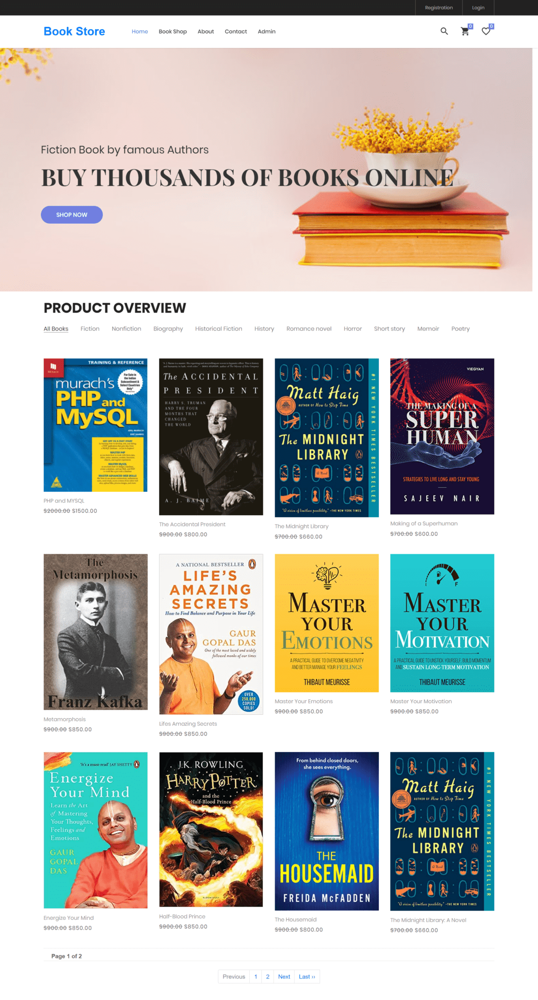
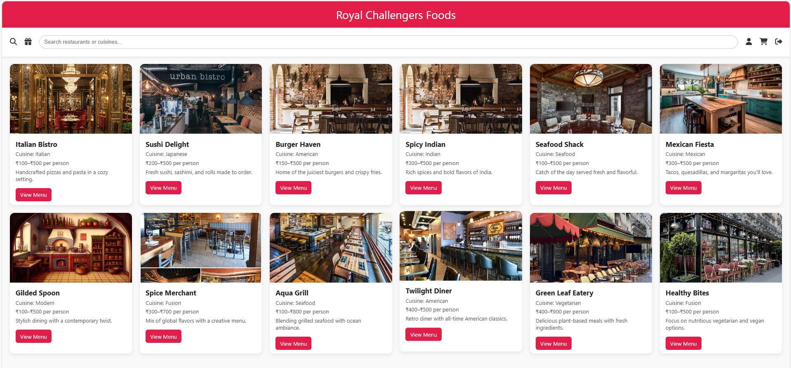

About Me
Hello, and welcome to my profile! I am Deepak AV, a passionate Java Full Stack Developer with a strong foundation in Core Java, Advanced Java, Spring Framework, DBMS, MySQL, HTML, CSS, JavaScript, AWS, Git, and GitHub. I am currently pursuing a Full Stack Java Development Internship at Tap Academy, where I am enhancing my technical and practical skills in building scalable web applications.
I hold a B.Tech in Electronics and Communication Engineering from GITAM University. While my academic background is rooted in electronics, I have developed a deep interest in web development, particularly in creating innovative solutions that combine back-end efficiency with seamless user experiences.
Two of my key projects include: (1) a Book Management System that allows users to manage, search, and categorize books efficiently through CRUD operations with user-friendly UI and backend logic; and (2) a responsive Food Delivery Dashboard, featuring a modern UI, filtering capabilities, and restaurant analytics to manage and present food delivery services effectively.
-Key Technologies Used: Java (Spring Boot), MySQL, React.js, AWS, HTML, CSS, JavaScript.
My technical expertise is complemented by strong problem-solving skills, communication abilities, and teamwork, which I believe are essential for effective collaboration and project success.
I am enthusiastic about contributing to dynamic development teams and working on challenging projects in full-stack development. I am particularly interested in leveraging cloud technologies, automation, and real-time data processing to create efficient and user-friendly solutions.
➤ 2+ Projects
Tech Stack
- Frontend: HTML, CSS, JavaScript
- Backend: Spring, Spring Boot, REST API
- Database: MySQL, JDBC
- Developer Tools: Eclipse IDE, GitHub
- Networking: Basics of VPN, HTTP/HTTPS, default ports, Telnet, Ping, Protocol
- Tools: AWS, Git
Projects
📘 1 - Online Bookstore Management System
- Developed a Java-based web application for users to browse and purchase books.
- Integrated login systems for both customers and admins to manage roles securely.
- Used MySQL to store data related to books, users, and orders.
- Implemented a shopping cart system to add, remove, and checkout books.
- Hosted the application on AWS EC2 with MySQL on RDS to ensure high availability.
🍽️ 2 - Food Delivery Application
- Built a full-stack food ordering platform with restaurant listings and order management.
- Created RESTful APIs using Spring Boot and secured login with Spring Security.
- Managed backend data including users, restaurants, menus, and orders with MySQL.
- Adopted MVC architecture to ensure clean code and maintainability.
- Designed intuitive frontend and responsive user interface for seamless UX.
Contact
Phone: 9380838238
Email: avdeepak03@gmail.com
LinkedIn: www.linkedin.com/in/deepak-a-v-82417724b